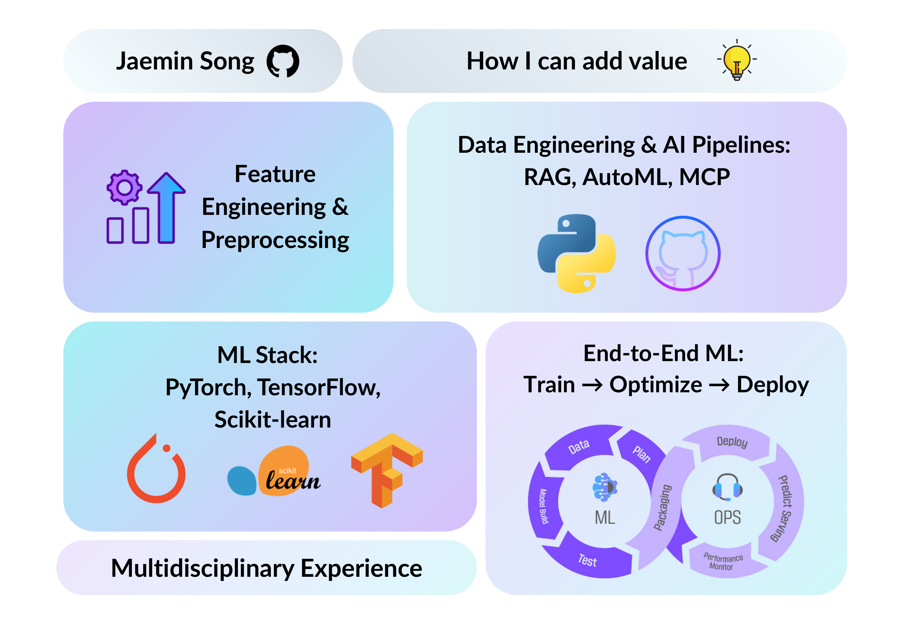

Jaemin Song
I am a graduate student in Industrial and Systems Engineering at Texas A&M University. I have a a strong interest in applying data science to real-world problems — especially those at the intersection of biomedical systems and engineering analytics.